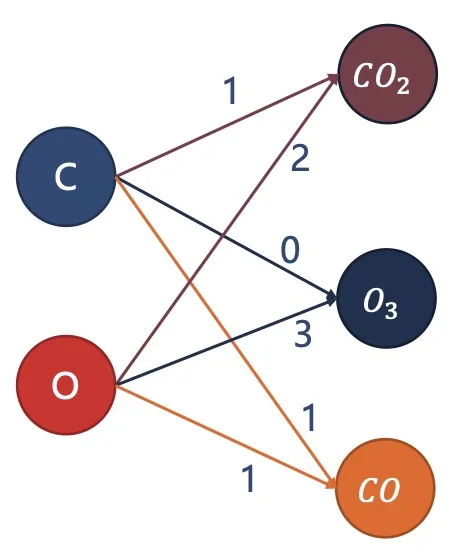
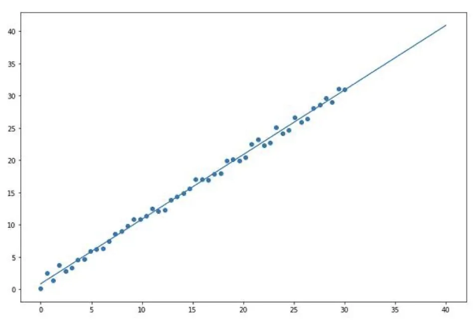
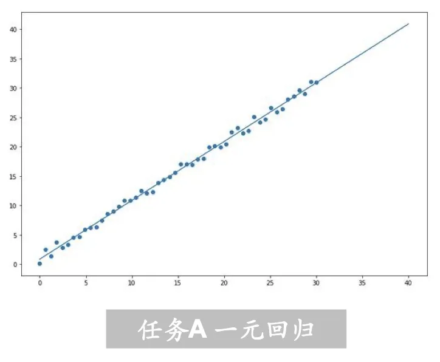
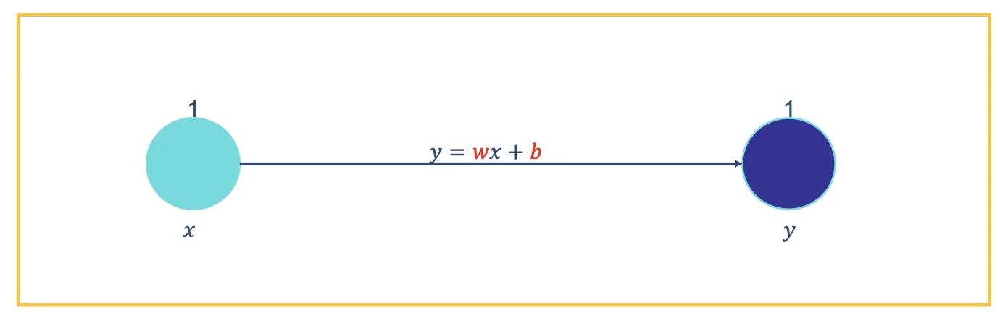
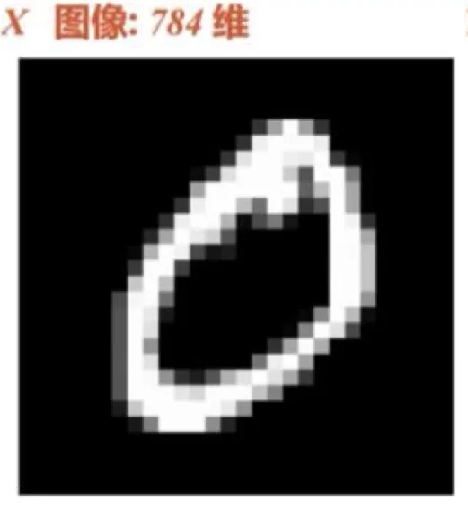
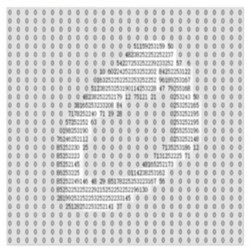
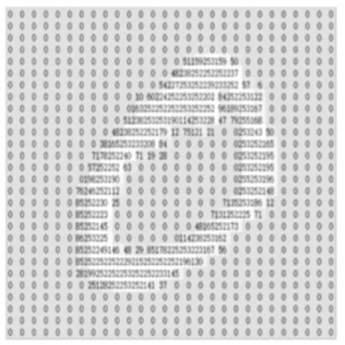
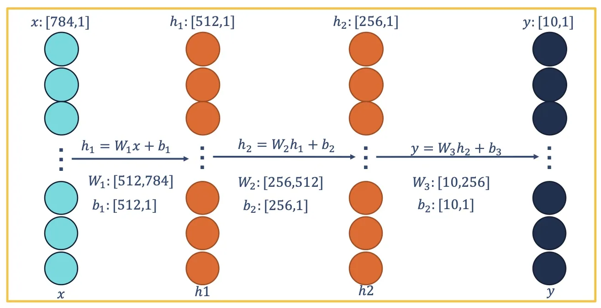
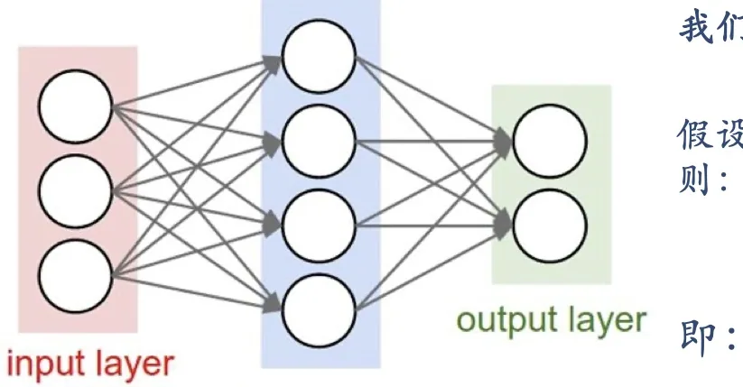
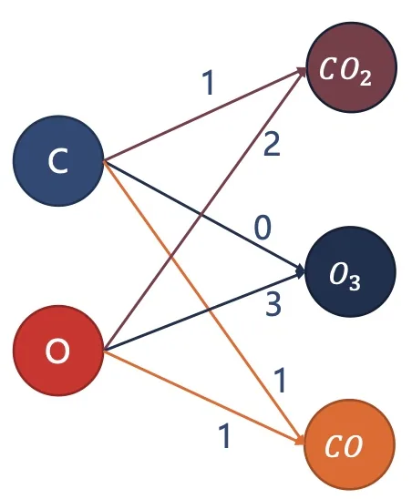

计算机视觉 · 第 5 章 前馈神经网络
5.5 神经网络的直观理解
公式看着抽象，但前馈网络在做什么其实可以很直观：矩阵乘法就是在「重新配比」，多一层就是在「再组合一次」。这一节用三个例子把这件事讲透——先用一个化学式的玩具例子说明权重的含义，再走完一元线性回归和手写体数字识别两个案例，最后用一个「多层线性网络等于一层」的推导说明激活函数为什么不可省。
1. 先看一个玩具例子：网络就是「重新配比」
假设输入 X 是二维向量，两个维度分别表示某种物质里 C 原子和 O 原子的数量：维度一决定 C 原子数量，维度二决定 O 原子数量。输出的 y 是三维向量，三个位置对应 CO₂、O₃、CO 三种物质的数量。写成矩阵形式就是 y = WX：
- 左图是输出 y 为三维向量的情况，通过改变权重的值可以获得不同的物质；
- 我们希望通过网络能从 [C, O] 转变到 [CO₂, O₃, CO]，也就是让权重矩阵对应到正确的配比；
- 如果在其后面再加一层，就表示可以通过组合……也就是说，多层网络做的事是「把这层的输出再重新配比一次」；
- 那么网络的学习过程，就是将 W 的数值尽可能接近理想配比的过程。

这个例子虽然和视觉无关，却点明了后面所有内容的主线：网络的「知识」全部存在权重里，训练就是找权重。区别只在于，真实任务的理想配比事先谁也不知道，只能靠数据去逼近。
2. 案例 A：一元线性回归
（1）任务与数据
横轴 X 表示西瓜重量，是 1 维；纵轴 Y 表示西瓜总价，也是 1 维。已知一部分西瓜的重量 X 与其对应的总价 Y，考虑称重误差，想要知道任意重量的西瓜的总价（图 2）。这是一个典型的回归问题：输入和输出都是连续数值。

（2）数据准备
课件用一段代码造出数据（图 3）：生成 100 个样本，真实关系设为「总价约为重量的两倍」，再叠加一点称重误差；随后把前 80 个样本划为训练集，后 20 个划为测试集。测试集不参与训练，只用来检验模型是不是真的学到了规律。

这段代码的骨架可以概括成几行：
n_example = 100
X = tf.random_normal([n_example])
noise = tf.random_uniform([n_example], -0.5, 0.5) # 称重误差
Y = X * 2 + noise
train_x, train_y = X[:80], Y[:80] # 训练集
test_x, test_y = X[80:], Y[80:] # 测试集（3）选模型
模型直接从 x 得到 y，要学习的参数是 ω 和 b，即 y = ωx + b。输入和输出的关系是由模型来决定的：整理好数据的下一步就是选择适当的模型；现实中我们并不知道输入和输出的关系是什么，只能凭经验猜测，所以西瓜总价任务用 y = ωx + b 这样的线性模型（图 4）。

（4）模型构建
课件用一个类来承载模型：参数 w、b 用可训练的变量初始化，正向传递就是一次乘加。这正是 5.1 节那个神经元的特例——没有激活函数（或者说激活函数取恒等函数），只有一个输入。它的代码只有几行：
class Model(object):
def __init__(self):
self.w = tf.Variable(1.0) # 参数初始化
self.b = tf.Variable(1.0)
def __call__(self, x):
return self.w * x + self.b # 正向传递
model = Model() # 实例化模型注记：课件用的是 TensorFlow 1.x 的 eager 风格代码，需要显式执行 tf.enable_eager_execution() 才能逐行求值；在 TensorFlow 2.x 里默认就是这种「即显」模式，不再需要这一句。后续案例的代码同样属于这个版本背景，读的时候抓住「定义参数 → 定义正向传递 → 定义损失 → 求梯度更新」这条主线即可。
3. 案例 B：手写体数字识别
（1）任务
已知部分手写体数字图像 X 和其对应的数字 Y，想要知道任意图像的对应数字（图 5）。这是一个分类问题：输入是图像，输出是 0 到 9 这十个类别中的一个。

关键在于「图像在计算机里是什么」：图像在计算机中也只是一堆数字，每个数字控制着每个像素的颜色；黑白模式下，255 表示最亮，0 表示最暗。这里每个图像都有 28×28 = 784 个像素，可以伸展成一个 784 维的向量；而输出是维度为 10 的向量，每个位置的数值都对应着一种可能性（图 6）。

（2）数据准备
任务 B 用的是 MNIST 数据集，总样本 70000 张：训练集 60000 张、测试集 10000 张。代码把每张图从 28×28 展平成 784 维，并把像素转成浮点数、标签转成整数（图 7）。

train, test = tf.keras.datasets.mnist.load_data() # 导入数据
(train_x, train_y), (test_x, test_y) = train, test
train_x = train_x.reshape([-1, 784]).astype('float32') # 形状和类型
test_x = test_x.reshape([-1, 784]).astype('float32')
train_y = train_y.astype('int32')
test_y = test_y.astype('int32')（3）任务分析：在输入和输出之间加隐藏层
直接用 784 维输入去预测 10 类输出，效果不好——对于数字识别任务，直接从 x 到 y 是很困难的。课件的方案是：在输入和输出之间增加若干个隐藏层，让网络先把输入变成一层层中间表示，再由最后一层给出分类结果（图 8）。课件给出的一个具体配置是：
- x: [784, 1] → h₁: [512, 1] → h₂: [256, 1] → y: [10, 1]；
- W₁: [512, 784]、W₂: [256, 512]、W₃: [10, 256]，b₁: [512, 1]、b₂: [256, 1]、b₃: [10, 1]；
- 三层的计算分别是 h₁ = W₁x + b₁、h₂ = W₂h₁ + b₂、y = W₃h₂ + b₃。

注记：课件图里第三个偏置写成了 b₂: [10, 1]，按上下文应为 b₃: [10, 1]，属于笔误。
（4）为什么必须加激活函数
如果只是这样把线性层叠起来，网络就白搭了。课件给了推导（图 9）：令 W₁X₁ + b₁ = X₂，则 Y₁ = W₂X₂ + b₂；反复代入即得 Y₁ = W₂(W₁X₁ + b₁) + b₂，展开后仍然是一个「输入乘以某个矩阵再加某个向量」的线性变换。
结论很硬：一系列线性方程的运算最终都可以用一个线性方程表示。对于三层神经网络是这样，就算网络深度加到 100 层，也依然是这样——因此神经网络就失去了意义。为了增强网络的表达能力，必须为网络添加非线性功能，也就是激活函数。

于是模型构建就变成：在线性模型的基础上增加若干个线性和非线性单元，正向传递的每一层都套一个 ReLU（课件的写法如下）：
h1 = tf.nn.relu(tf.matmul(x, self.W1) + self.b1) # 正向传递
h2 = tf.nn.relu(tf.matmul(h1, self.W2) + self.b2)
y = tf.nn.relu(tf.matmul(h2, self.W3) + self.b3)4. 神经网络的训练：调整权重去逼近目标
三层神经网络可以表达任意连续函数，所以对于我们要求解的大部分问题，目标就是让网络的输出尽可能接近想要预测的值，从而让神经网络更好地拟合对应问题。因此，训练就是要调整权重矩阵 ω，让当前网络的预测值接近我们真正想要的目标值。
回到前面化学式的例子就很好理解：要得到 CO₂ 而不是 CO₃，可以将 O 原子数量上升、C 原子不变；要得到 O₃ 而不是 C₆₀，可以将 C 原子的数量降低、氧原子数量上升。对应到网络里，就是当权重矩阵配比不对时去调整权重矩阵 ω（图 10）。

不过「调大还是调小」不能靠猜。下一节要引入的损失函数，正是用来度量「当前权重有多差」的那把尺子。
本节小结
- 矩阵乘法可以理解成「重新配比」：权重决定输出各维度如何由输入各维度组合而来；网络的知识全在权重里，学习就是找权重；
- 案例 A（一元线性回归）：由西瓜重量预测总价，选模型 y = ωx + b，参数只有 ω、b；数据 100 个样本、前 80 训练后 20 测试；
- 案例 B（手写体数字识别）：图像是 28×28 = 784 个像素值，展成 784 维向量输入，输出 10 维向量表示十种可能性；MNIST 共 70000 张，训练 60000、测试 10000；
- 直接在输入输出之间接一层效果不好，方案是加隐藏层（如 784 → 512 → 256 → 10）；
- 但若不加激活函数，多层线性层的复合仍等价于一次线性变换（Y₁ = W₂(W₁X₁ + b₁) + b₂），加到 100 层也一样，网络就失去了意义——这就是激活函数不可省的根本原因；
- 训练的目标是调整权重矩阵，让网络的预测值接近目标值；「怎么知道该往哪调」需要损失函数，这是下一节的内容。